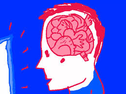
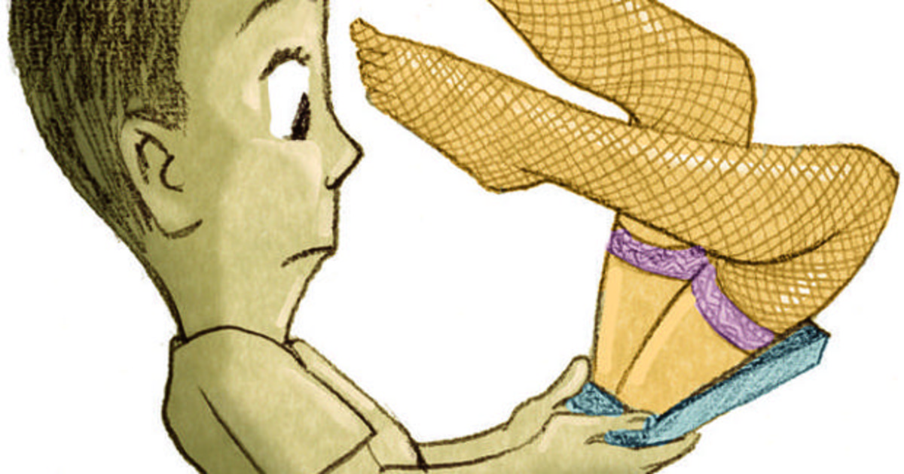

| Pagina principal | Pornografia en internet | Consecuencias | Medios de prevencion |
|
la psicobiologia del porno: La industria pornográfica se comporta como una droga, y es que, a diferencia del placer que la práctica sexual puede llegar a provocar en nuestro organismo, el placer otorgado por la pornografía puede llegar a generar un comportamiento adictivo debido a la mayor cantidad de dopamina que este desencadena. Esto se debe a que la práctica sexual está más relacionada con el instinto de supervivencia de la especie humana, mientras que, evidentemente, el ver porno no. |
|||
| A todos nos gusta sentirnos bien, precisamente por eso, nuestros cerebros, al percibir esta mayor descarga de dopamina mediante el consumo del porno va a incentivar la repetición de la conducta haciendo que la persona pierda la capacidad de controlar sus propias sensaciones y voluntad. Ello va a generar que con el tiempo se vea afectado el circuito de recompensa y, en consecuencia, la misma producción de dopamina, siendo necesario consumir mayores dosis de pornografía para que este alcance los niveles de satisfacción que generaba en un inicio, proceso que se conoce como “fenómeno de tolerancia”. En consecuencia, la persona puede llegar a desarrollar un problema de dependencia hacia la pornografía sintiendo cada vez más la necesidad de estar constantemente estimulada para sentirse “estable”. | |||
|  | |||
|
Cuando desarrollamos una adicción a la
pornografía nuestro cerebro cambia tanto estructuralmente como
químicamente, y esto se expresa a través de síntomas de ansiedad,
estrés, dificultad para concentrarse en determinadas tareas, temor a
tomar decisiones, cambios rápidos de humor sin razón aparente, falta de
motivación, apatía, menos ganas de socializar, depresión, tendencia a la
procrastinación y una sensación de estancamiento en la vida.
Por otro lado, al estar expuestos desde una edad tan temprana a este tipo de contenido, el joven generará una conceptualización de las relaciones sexuales errática. Esto se debe a que, en muchos casos, se trata del primer acercamiento hacia un acto sexual previa a la propia experimentación, convirtiendo lo que ven en pantalla en una conducta sexual estándar. |
|||
Los efectos de largo plazo por alteración del circuito de recompensa Mientras más se altere el circuito de recompensa, se requerirá mayor exposición en frecuencia e intensidad de los estimuladores para poder alcanzar el nivel de dopamina deseado. Esto se expresará en una migración de los adolescentes a la visualización de contenidos pornográficos cada vez más peligroso y nocivos, excediendo largamente los estándares de lo aceptable, alcanzado niveles alarmantes. Los adolescentes que se vean expuestos a estos contenidos con mayor regularidad, los considerarán como normales y empezaran a adquirir conductas de riesgo que, en definitiva, perjudicarán su desarrollo. que es dopamina: La dopamina es el neurotransmisor catecolaminérgico más importante del Sistema Nervioso Central (SNC) de los mamíferos y participa en la regulación de diversas funciones como la conducta motora, la emotividad y la afectividad así como en la comunicación neuroendócrina. La dopamina tiene un papel fundamental. “Este neurotransmisor activa un mecanismo cerebral que se llama circuito de recompensa que hace que tendamos una y otra vez a repetir comportamientos y consumos en busca de esa sensación” Se suele hablar mucho del papel de la dopamina en una parte del cerebro llamada núcleo accumbens, donde se localiza la recompensa y aumenta la actividad de este neurotransmisor cuando, por ejemplo, ganamos un juego de azar. Drogas muy conocidas, como la cocaína o las anfetaminas, disparan los niveles de dopamina. |
|||
|  | |||